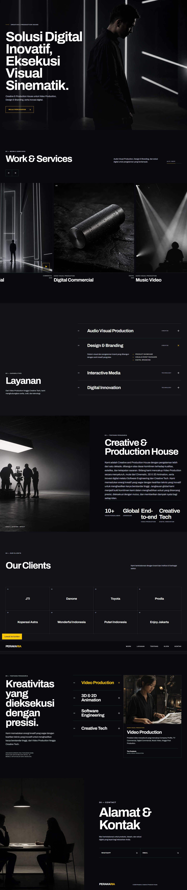

<!doctype html><meta charset="utf-8"><title>Perakaria full QA comparison</title><style>*{box-sizing:border-box}body{margin:0;padding:16px;background:#1a1b20;color:#fff;font:700 13px Arial;display:grid;grid-template-columns:1fr 1fr;gap:16px;align-items:start}figure{margin:0;background:#090a0d}figcaption{position:sticky;top:0;height:36px;padding:10px;background:#090a0d;letter-spacing:.12em;z-index:2}img{width:100%;height:auto;display:block}</style><figure><figcaption>SOURCE OPTION 3 — FULL BOARD</figcaption></figure><figure><figcaption>IMPLEMENTATION — FULL PAGE 1440</figcaption></figure>